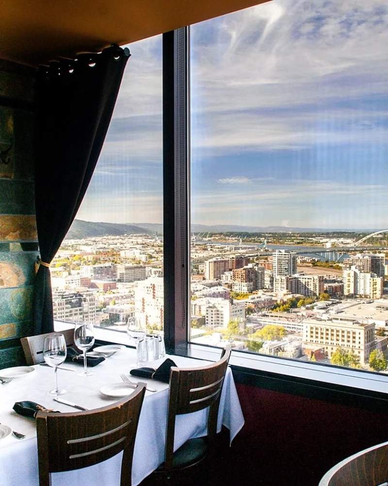
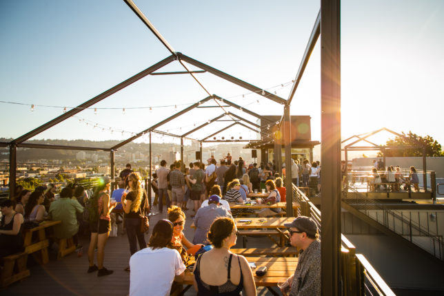
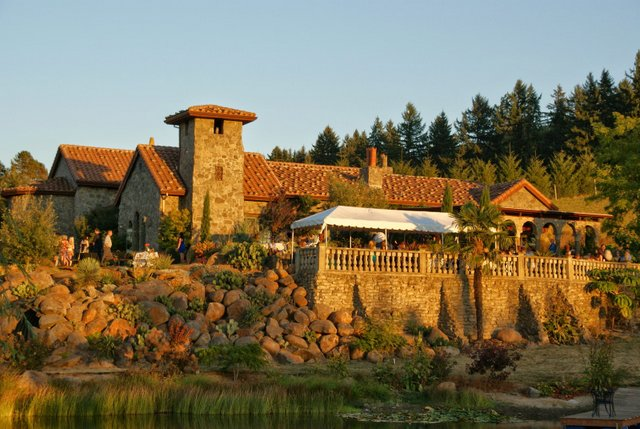
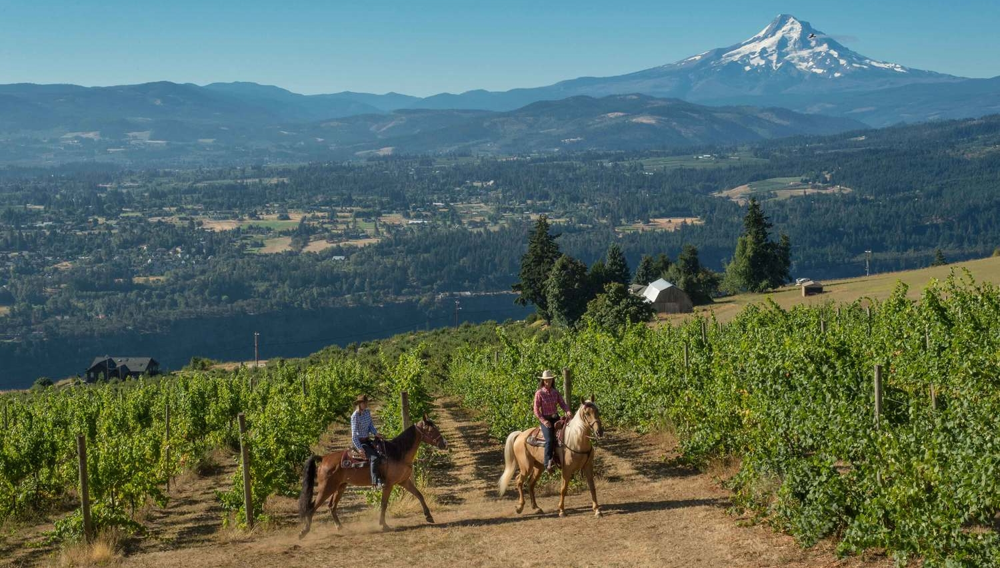
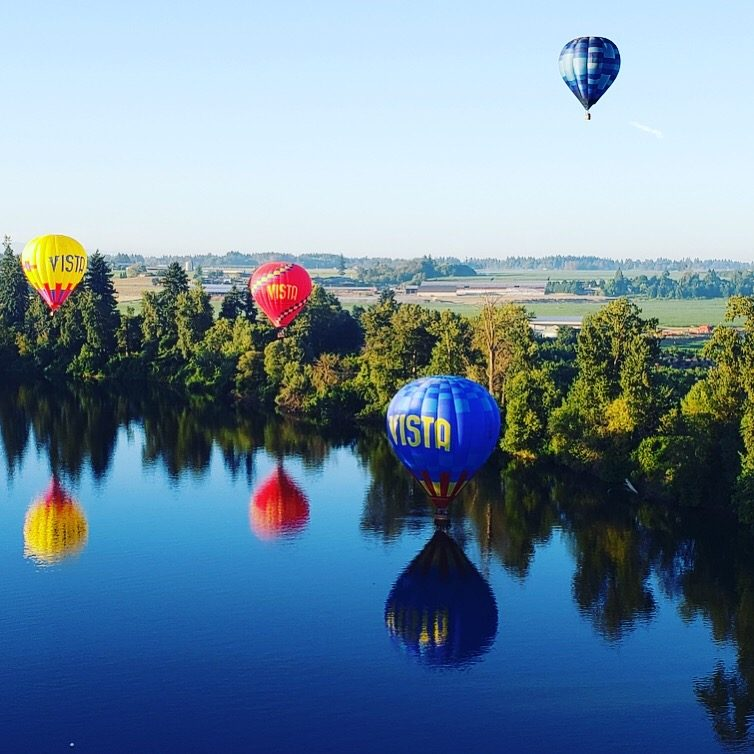

In The City
Portland City Grill

-
Take in the sweeping city and landscape view. 20 years and counting, Portland City Grill maintains its
commitment to serving fresh, locally sourced seafood and exceptionally prepared steaks influenced by
classic island Asian and Northwest flavors.
-
Best time to go: Year-round, but it’s especially nice on a sunny day at sunset.
-
Tip: Make reservations and ask for a window seat!
Roofdeck at Revolution Hall

-
Enjoy dinner and drinks on the rooftop bar.
-
Best time to go: Summer hands down!
-
Tip: Get there early to secure a good view of the sunset. It will be less crowded during the week!
Further Out
Villa Catelvana Cellars

-
Villa Catalana was inspired by a 12th Century stone church in Spain's Catalonia district. Take a picnic and enjoy the flowers and trees and views!
-
Best time to go: Summer and Fall, on a sunny day.
-
Tip: Must make a reservation in advance!
Equestrian Wine Tour in the Willamette Valley

-
Get tipsy and sip wine while riding horses through grape vines.
-
Best time to go: Summer and Fall, on a sunny day.
-
Tip: Spend the night avoiding all driving!
Vista Balloon Adventures

-
Book a ride for two or with a group and enjoy the sunrise over the Willamette Valley.
-
Best time to go: Spring, Summer, and Fall, on a sunny day.